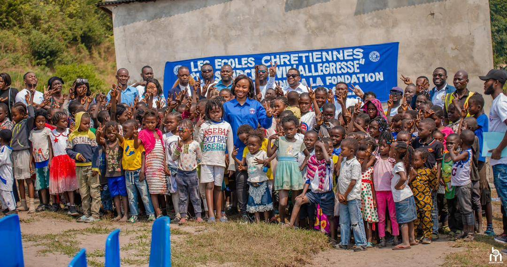

05 Fév 2024
Éducation
Inauguration du nouveau complexe numérique à Kinshasa
Un espace moderne doté de 50 ordinateurs et d'une connexion internet haut débit pour la formation des jeunes.
Lire la suite